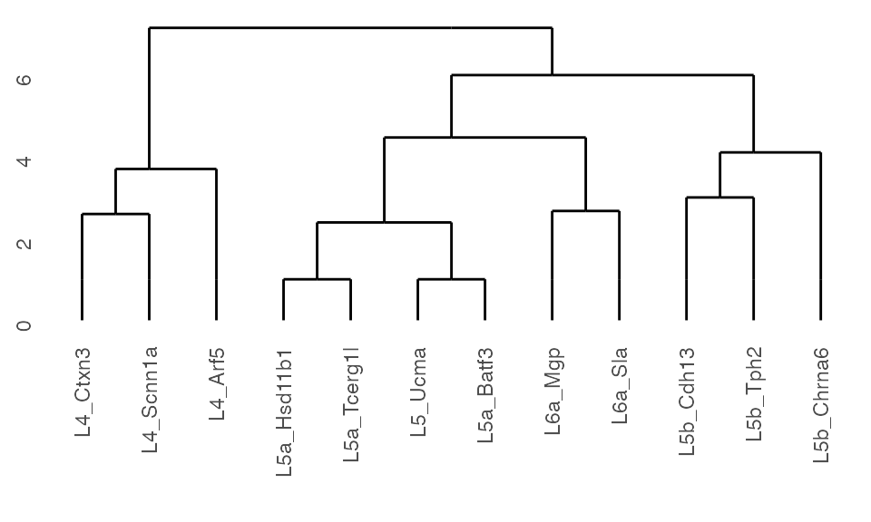

vignettes/K2Taxonomer_singlecell.Rmd
K2Taxonomer_singlecell.RmdThis vignette describes the workflow for running K2Taxonomer on single-cell gene expression data (Reed and Monti 2020). Many steps in this workflow is shared with that of bulk gene expression. Accordingly, these steps are described in more detail here.
For this example we will use a single-cell RNAseq dat set a of 379 cells from the mouse visual cortex which is a subset from (Tasic et al. 2016), made available by the scRNAseq package.
This data set includes identifiers of 17 cell types belonging to three major classes of cells based on surface markers vasoactive intestinal peptide (Vip), parvalbumin (Pvalp) and somatostatin (Sst). Vip cells include additional subclasses based on additional surface markers: L4, L5, L5a, L5b and L6a. Finally, all of these classes are further subtyped based on additional markers genes.
dat <- scRNAseq::ReprocessedAllenData(assays="rsem_tpm")ExpressionSet objectAs expression data input K2Taxonomer currently requires an ExpressionSet object. ExpressionSet objects can be easily created from the SingleCellExperiment object uploaded by the scRNAseq package.
# Convert to expression set
eSet <- ExpressionSet(assayData=assay(dat))
pData(eSet) <- as.data.frame(colData(dat))
## Log the data
exprs(eSet) <- log2(exprs(eSet) + 1)Given that this data set is relatively small, we will need to remove lowly represented cell types. These will include six cell types with fewer than 5 cells. Additionally, we will remove 30 cells without cell type labels.
## Table of cell types
typeTable <- table(eSet$Primary.Type, useNA="ifany")
print(typeTable)
#>
#> L4 Arf5 L4 Ctxn3 L4 Scnn1a L5 Ucma L5a Batf3 L5a Hsd11b1
#> 17 19 47 14 41 26
#> L5a Pde1c L5a Tcerg1l L5b Cdh13 L5b Chrna6 L5b Tph2 L6a Car12
#> 4 25 32 8 24 3
#> L6a Mgp L6a Sla L6a Syt17 Pvalb Tacr3 Sst Myh8 <NA>
#> 33 52 2 1 1 30
# Remove NAs
eSet <- eSet[, !is.na(eSet$Primary.Type)]
# Keep cell types with at least 5 observations
eSet <- eSet[, eSet$Primary.Type %in% names(typeTable)[typeTable >= 5]]
print(eSet)
#> ExpressionSet (storageMode: lockedEnvironment)
#> assayData: 20816 features, 338 samples
#> element names: exprs
#> protocolData: none
#> phenoData
#> sampleNames: SRR2140028 SRR2140022 ... SRR2139336 (338 total)
#> varLabels: NREADS NALIGNED ... passes_qc_checks_s (22 total)
#> varMetadata: labelDescription
#> featureData: none
#> experimentData: use 'experimentData(object)'
#> Annotation:Due to data wrangling procedures in the K2Taxonomer functions, cell type label values can only contain letters, numbers, and underscores. Here we replace the spaces in the cell type labels with underscores and create a new variable celltype.
eSet$celltype <- gsub(" ", "_", eSet$Primary.Type)For single-cell analysis, K2Taxonomer implements the constrained K-means algorithm using the lcvqe() function from the conclust R package. K2Taxonomer includes two approaches for implementing this algorithm, specified by the cKmeansWrapper() and cKmeansWrapperSubsample() functions. While each runs the same constrained K-means algorithm, to improve computational efficiency cKmeansWrapperSubsample() first randomly subsamples the data to the size of the smallest represented cell type for each perturbation data sets (Wagstaff et al. 2001).
In order to run either function, the user must include a named list with the following components:
ExpressionSet object.lcvqe(), which uses 10 as the default.K2 object
# Run K2Taxonomer
K2res <- K2preproc(eSet,
cohorts="celltype",
featMetric="F",
logCounts=TRUE,
nBoots=100,
clustFunc=cKmeansWrapperSubsample,
clustList=wrapperList)
#> Collapsing group-level values with LIMMA.At this point the rest of the analysis identical to that of the basic analysis as presented here (Reed and Monti 2020). Please refer to this document for further description of these steps.
## Run K2Taxonomer aglorithm
K2res <- K2tax(K2res)
## Get dendrogram from K2Taxonomer
dendro <- K2dendro(K2res)
## Get dendrogram data
ggdendrogram(dendro)
## Run DGE
K2res <- runDGEmods(K2res)
## Concatenate all results and generate table
DGEtable <- getDGETable(K2res)
head(DGEtable)
#> gene coef mean t pval fdr B edge
#> 1 Pde1a 7.607703 6.795236 33.04659 1.191313e-107 1.487902e-102 234.4221 2
#> 2 Ptn 8.753100 6.087870 40.05787 2.249965e-94 1.405058e-89 203.6672 1
#> 3 Bcl6 3.989053 1.105827 31.13960 1.406226e-88 5.854398e-84 190.8268 2
#> 4 Neurod6 7.148083 6.023724 29.42144 1.107549e-83 3.458212e-79 179.7376 1
#> 5 Fam84a 6.077725 2.119998 29.36922 1.569144e-83 3.919595e-79 179.3947 2
#> 6 Foxp2 5.197925 2.479363 33.31899 4.130923e-81 8.598930e-77 173.8696 2
#> node direction
#> 1 A up
#> 2 E up
#> 3 C up
#> 4 C up
#> 5 C up
#> 6 E up
## Create dummy set of gene sets
genes <- unique(DGEtable$gene)
genesetsMadeUp <- list(
GS1=genes[1:50],
GS2=genes[51:100],
GS3=genes[101:150]
)
## Run gene set hyperenrichment
K2res <- runGSEmods(K2res,
genesets=genesetsMadeUp,
qthresh=0.1)
## Create expression matrix with ssGSEA(GSVA) estimates
K2res <- runGSVAmods(K2res,
ssGSEAalg="gsva",
ssGSEAcores=1,
verbose=FALSE)
## Run differential analysis on enrichment score Expression Set
K2res <- runDSSEmods(K2res)
## Get differential results for one split
head(K2results(K2res)$A$dsse)
#> category coef mean t pval fdr
#> 1 GS3 0.126609098 -0.02959331 7.3074367 1.423274e-12 1.280947e-11
#> 2 GS2 0.049090375 -0.01559724 2.6250996 8.984562e-03 1.347684e-02
#> 3 GS1 0.005320382 -0.02537272 0.3296895 7.418021e-01 7.854375e-01
#> B edge
#> 1 17.961540 1
#> 2 -3.581029 2
#> 3 -6.922921 2
## Extract table of all hyper and sample-level enrichment tests
K2enrRes <- getEnrichmentTable(K2res)
head(K2enrRes)
#> category node edge direction pval_hyper fdr_hyper nhits ndrawn ncats
#> 1 GS3 G 1 up 1.079260e-18 3.885337e-17 19 467 50
#> 2 GS2 F 1 up 2.192957e-17 3.947323e-16 16 309 50
#> 3 GS1 C 1 up 3.680606e-16 3.312545e-15 18 541 50
#> 4 GS2 C 1 up 3.680606e-16 3.312545e-15 18 541 50
#> 5 GS3 A 1 up 4.612150e-16 3.320748e-15 21 875 50
#> 6 GS1 E 1 up 3.002425e-14 1.801455e-13 23 1382 50
#> ntot pval_limma fdr_limma coef mean t B
#> 1 20000 1.437757e-08 4.313270e-08 0.1524040 -0.001945461 5.822848 9.97524
#> 2 20000 3.187581e-02 4.413574e-02 0.0813716 -0.107220173 2.189929 -4.02103
#> 3 20000 NA NA NA NA NA NA
#> 4 20000 1.015150e-10 4.568173e-10 0.1384178 -0.003542505 6.675373 13.87399
#> 5 20000 1.423274e-12 1.280947e-11 0.1266091 -0.029593310 7.307437 17.96154
#> 6 20000 1.297947e-10 4.672610e-10 0.1242961 -0.048398313 6.549259 14.15506
#> hits
#> 1 Nav1,Tmem47,Camk2n1,Sphkap,Rims3,Lypd1,Galntl6,Ccl27b,Gm13306,Coro6,Fam19a2,Lamp5,Npcd,Hs3st4,Dkkl1,Whrn,Nrep,Coch,Scnn1a
#> 2 Nos1ap,Crym,Gucy1a3,Stk17b,Enc1,Dkk3,Fstl5,Ldb2,6430573F11Rik,Luzp2,Dynll1,Meis2,Bcl11b,Ntrk3,Cck,Igfbp4
#> 3 Pde1a,Neurod6,Foxp2,Pcp4,Cux2,Slc1a2,Nptx1,Ncald,Slc30a3,Rorb,Atp1b2,Olfm1,Camk2d,Cdh10,Cbln4,Per3,Tle4,Hpca
#> 4 Unc5d,Zdhhc22,Car10,Kcnv1,Pamr1,Deptor,Tmsb10,Dkk3,Spock1,Alcam,Tspan7,Ccdc80,Gpm6a,S100a10,Fxyd7,Abracl,Scube1,Gadd45a
#> 5 Camk2n1,Lin7a,Sphkap,Chgb,Pou3f2,Rims3,Rph3a,Cpne9,Fam19a2,Npcd,Dcdc2a,Mapk4,Dkkl1,Whrn,Ppm1h,Pcdh20,Kcna2,Nrep,Coch,Scnn1a,Rgs4
#> 6 Ptn,Neurod6,Fam84a,Cux2,Srgap3,Slc30a3,Rorb,Plcxd2,Atp1b2,Btbd3,Lrrtm4,Olfm1,Utrn,Camk2d,Cdh10,Cbln4,Fam19a1,Per3,Cacna2d3,Serpine2,Vat1l,Hpca,Grik1For more information see go here.
## NOT RUN
K2dashboard(K2res)Reed, Eric R., and Stefano Monti. 2020. “Multi-Resolution Characterization of Molecular Taxonomies in Bulk and Single-Cell Transcriptomics Data.” Preprint. Bioinformatics. https://doi.org/10.1101/2020.11.05.370197.
Tasic, Bosiljka, Vilas Menon, Thuc Nghi Nguyen, Tae Kyung Kim, Tim Jarsky, Zizhen Yao, Boaz Levi, et al. 2016. “Adult Mouse Cortical Cell Taxonomy Revealed by Single Cell Transcriptomics.” Nature Neuroscience 19 (2): 335–46. https://doi.org/10.1038/nn.4216.
Wagstaff, Kiri, Claire Cardie, Seth Rogers, and Stefan Schrodl. 2001. “Constrained K-Means Clustering with Background Knowledge.” In ICML, 577–84.